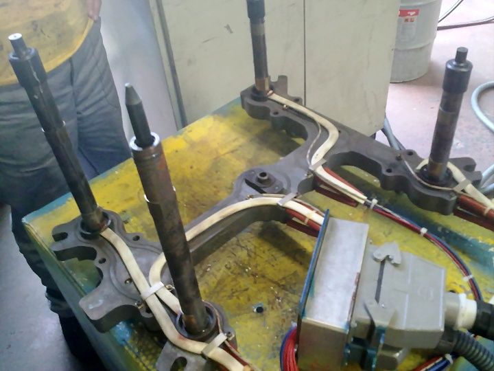
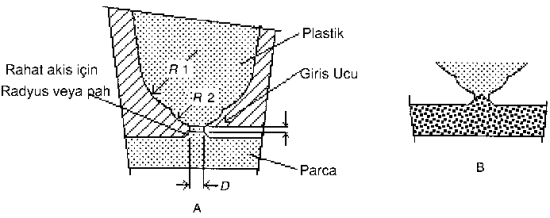
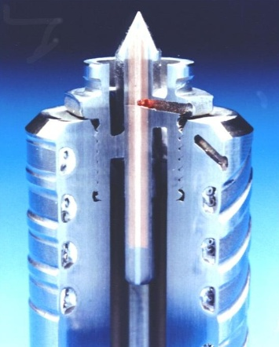
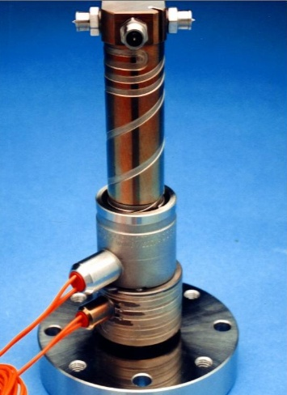
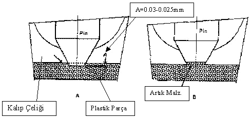

Hüseyin Ayar
Gazi Üniv. TEF, Kalýpçýlýk Öðretmenliði
Ocak 2012, Ankara
Önsöz:
Plastik enjeksiyon kalýplarýnda sýcak yolluk sistemleri gittikçe yaygýnlaþmaya baþlamýþtýr. Bu sistemlerin artan kullanýmýyla birlikte sýcak yolluðu oluþturan elemanlarý da tanýma ihtiyacý doðmuþtur. Bu elemanlar baþta manifolt, rezistans, nozul (meme ucu) dur. Bu çalýþma, kýsaca, sýcak yolluk sistemlerinin tanýtýmý, aðýrlýklý olarak ise meme ucu seçimi ve bu seçimi etkileyen faktörler hakkýndadýr.
Özet:
Sýcak yolluk sistemlerinde meme ucu seçimi, ürünün hacmi, yoðunluðu, ürünün yüzey kalitesi, üründen beklenen dayaným gibi bazý deðiþkenlere baðlýdýr. Bu seçim, üründe görsel, fiziksel ve kimyasal deðiþiklikleri etkileyebileceði için, meme ucu, sýcak yolluk sisteminin en önemli parçasýdýr.
Meme seçimini etkileyen faktörler, parça aðýrlýðý ve büyüklüðü, polimer cinsi, soðutma sisteminin konumu, enjeksiyon hýzý, eriyik malzeme sýcaklýðý, giriþ geometrisidir.
1. Giriþ:
Plastik enjeksiyon kalýplarýnda yolluklar, enjeksiyon makinesinden gelen eriyik malzemeyi kalýp boþluðuna ileten sistemlerdir. Sýcak yolluk sistemleriyse, makineden gelen bu eriyik malzemeyi kimyasal ve fiziksel özelliklerini bozmadan korur ve iletir. Bu sistem malzeme tasarrufu ve malzeme donmasýnýn engellenmesi, dolum süresinin kýsalmasý gibi bir çok avantaj saðlar.
Sýcak yolluk sistemi elemanlarý temelde manifolt, rezistans, termokupl ve meme ucudur. Ürünle doðrudan temasý olan ve sonucu daha çok etkileyen eleman meme ucudur. Meme ucunun seçimini polimer cinsi, ürünün boyutlarý, dolum stratejisi gibi bazý faktörler belirler.
Meme ucunun doðru seçimi ideal akýþ, kaliteli ürün, hýzlý çevrim süresi gibi avantajlar saðlar. Yanlýþ seçilmiþ bir meme ucu ise üründe istenmeyen akýþ izleri, istenmeyen iç gerginlikler, eksik dolum, erken donma veya damlama gibi sorunlar yaratabilir.
2. Sýcak yolluk sistemleri:
Sýcak yolluk sistemi makinenin enjeksiyon grubunun devamý ve uzantýsý gibidir. Kalýp içerisinde baþlý baþýna bir sistem olup tasarýmý ve mühendisliði özel bilgi ve tecrübe gerektirir. Manifolt sistemde bir nevi gövde görevi yapmaktadýr. Ayný zamanda malzemeyi daðýtýr. Sistem üzerine yerleþtirilmiþ rezistanslar sayesinde ýsýtýlýr, bu rezistanslarýn ýsýlarýný belirli bir aralýkta tutan, ýsýnýn ölçümünü yapan elemanlarsa termokupllardýr. Sýcaklýðýn düþtüðünü algýlayan termokupl rezistanslarýn elektrik enerjisini tekrar tetikleyerek çalýþmasýný saðlar. Termokupllar bozulduðunda sistem sürekli ýsýnmaya devam edecektir.

Þekil 2.1 Sýcak yolluk sisteminin genel bir görüntüsü |
Sýcak yolluk sisteminin avantajlarý:
- Ýþçilikten tasarruf (yolluk kýrma iþi yoktur)
- Malzemeden tasarruf
- Düþük çevrim süresi
- Soðuk yolluklara göre daha düþük basýnçta çalýþma
- Düþük basýncýn avantajý olarak üründe daha az istenmeyen iç gerilme
- Valfli sistemler sayesinde soðuk birleþmenin azalmasý
3. Sýcak yolluklarda meme ucu seçimi:
Sýcak yolluk memeleri genel olarak açýk uçlu ve valfli olanlar olarak ikiye ayrýlabilir. Açýk uçlu olan tiplerde meme ucu sürekli açýktýr. Enjeksiyon baþladýðýnda akýþ normal þekilde olur. Enjeksiyon bitiminde uçta kalan plastik donar ve tapa vazifesi görür. Bir sonraki çevrimde ürün boþluðuna itilerek orda erir ve parçaya karýþýr. Valfli sistemlerde ise ucun açýk veya kapalý olmasý baþka bir sistem tarafýndan tetiklenerek belirlenir. Genellikle hidrolik sistemlerle tetiklenen valf istendiðinde açýlýr ve akýþ kontrollü olarak yapýlýr.
Sýcak yolluk memeleri genelde 1.2344 sýcak iþ çeliðinden imal edilir ve sertleþtirilir. [1]
3.1 Açýk uçlu meme uçlarý:
Bu tip meme uçlarý sürekli açýktýr ve akýþa müsade eder. Yapýlarý basittir;
Kalýp açýlýrken meme ucunda kalan bir miktar malzeme artýk madde oluþturur ve ürün üzerinde kötü görünen bir iz býrakýr. Bu kötü iz meme ucunun çapýna ve operasyon parametrelerine (basýnç, sýcaklýk, zaman) baðlýdýr. [2]
Bir sonraki çevrimde kalýp boþluðuna tekrar basýlýr ve meme ucu tekrar açýlýr, kalýp boþluðu plastikle dolmaya baþlar. Meme ucunu týkayan donmuþ malzeme genellikle erir ve ürünün içine dolan plastiðe karýþýr. Bu olayda önemli olan, bu donmuþ malzemenin eriyebilmesi için, kalýp boþluðundaki diþi ve erkek kalýp yüzeyleri arasýndaki mesafenin meme ucu mesafesinden büyük olmasýdýr. Meme ucu mesafesini mümkün olduðunda kýsa tutmak idealdir. [2]
Açýk uçlu meme seçimi veya tasarýmýnda amaç, geometrik dengeyi bulmak ve meme ucunda donmasý istenen parçanýn kendiliðinden ve rahatça donmasý, sonrasýnda da kolayca eriyebilmesidir. [2] Açýk uçlu meme uçlarý genellikle PE ve PP malzemelerde tercih edilir. [2]
Genel olarak üç tip açýk uçlu meme çeþidi vardýr;
- Dairesel tip
- Halkalý tip
- Kenar giriþ tip [2]
3.1.1 Dairesel tip meme uçlarý:
Basit yapýlarý sayesinde kirli malzemeye pek duyarlý deðildirler. Bu tiplerde donma veya damlamayý önlemek ve dengelemek çok önemlidir. Üründe meme ucundan kopma yapan kýsým ufak bir çýkýntý yapabilir. Bu sorun, ürün tasarýmýnda ufak bir çukur yapýlarak önlenebilir.
Açýk uçlu meme uçlarýnda temelde rastlanan iki problem;
Meme ucu çýkýþ kýsmýndaki yüksek gerilmeler, plastik basýncý meme ucunu dýþa doðru itmeye çalýþýr.
Akýþ sýrasýnda sýcaklýk kontrolü [2]

Þekil 3.1 Çift radyüslü dairesel tip meme ucu |
3.1.2 Halkalý tip meme uçlarý:
Giriþ kesiti halka formunda olan uçlar, ekseninde plastik malzemenin donmasýný önleme için torpil formunda sýcak bir silindirik parçanýn yerleþtirildiði açýk uçlu yolluk giriþleridir. Yolluk memesi içindeki sýcak malzeme ile ýsýtýlan ve parçanýn dýþ yüzeyine kadar uzanan torpedo, düþük sýcaklýktaki kalýbýn soðuttuðu giriþ ucuna plastik malzemenin sýcaklýðýný taþýyarak giriþ ucunda malzemenin enjeksiyon sýrasýndaki donma riskini ortadan kaldýrýlmaktadýr. Torpedonun etrafýnda daima sýcak bir plastik tabakasý oluþmakta, soðuk kalýp çeliði ile malzeme yolluk giriþ ucundaki sýcak torpedonun etrafýndan boru þeklinde akarak kalýp gözüne girmektedir. Sýcak torpedo ucunun çevresinden plastik malzemenin yüksek hýzlardaki akýþý, özellikle katkýlý plastikler kullanýldýðýnda torpedo ucunu zamanla aþýndýrmakta ve deðiþtirilmesini gerektirmektedir. [3]

Þekil 3.2 Torpedo ucunun kesit fotoðrafý [3] |
Bu meme uçlarýnda ipliklenme daha az olur, uç kýsýmda donma ihtimali çok daha azdýr, dairesel açýk uçlulara göre daha küçük iz býrakýrlar. Fakat akýþ dar kesitten olduðu için kirli malzemeye çok duyarlýdýr, dar kesit yüzünden yüksek basýnç gerektirir, torpedoda olan aþýnma ürüne karýþýp parça kalitesini düþürebilir.
3.1.3 Kenar giriþ tip meme uçlarý:
Çalýþma prensibi olarak daire kesitli uçtan farklý deðildir. Enjeksiyon bitiminde uçta bir miktar malzeme donarak orayý kapatýr, sonraki enjeksiyon baþlangýcýnda eriyerek ürüne karýþýr.
Yolluk giriþi kanalýnýn yüksekliði(veya kalýnlýðý) parça et kalýnlýðýndan daha düþük olmalý ve donmuþ plastik tapanýn, kalýp gözüne kolay itilebilmesi için konik yapýlmalýdýr. Yolluk giriþ kanalýnýn yüksekliði genellikle 0,5-1 mm arasýnda seçilir. Küçük deðerlerin tercih edilmesine raðmen buradaki sýnýrlama, kalýp gözü ile sýcak yolluk memesi için açýlan boþluklarýn arasýnda kalan ince et kalýnlýðýndaki çeliðin mukavemetidir. L mesafesinin seçimi yolluk giriþinin parça üzerindeki konumuna ve parça geometrisine de baðlýdýr. [3]

Þekil 3.3 Dört çýkýþlý kenar tip meme ucu [3] |
3.2 Valfli meme uçlarý:
Valf geçiþ sisteminin öncüsü Messrs. Kelly ve Seymour’dur. Sonrasýnda bir çok mekanik geliþme takip etmiþtir. [4]
Bu tip uçlarýn en büyük avantajý dolum iþleminin kontrol altýnda tutulmasýdýr. Böylece soðuk birleþme önlenebilir, dolmasý zor geometriler veya dar hacimler daha iyi doldurulabilir. Parçada istenmeyen gerginlikler azaltýlabilir. Meme ucundaki iðne olarak anýlan pim genellikle hidrolik sistemle kontrol edilir. Bu iðnenin boyunun hesaplanmasý ürün kalitesi açýsýndan önemlidir. Sýcaklýk sýrasýndaki genleþmeler hesaba katýlarak tasarlanmalýdýr. Þekil 3.4 te bu tip meme ucunun sembolik kesit ve tasarým hatasýnýn sonucu görülmektedir.
Ýdeal olarak pim ucunun plastik parçaya 0.03 – 0.025 mm derinlikte batacak þekilde ayarlanmýþ olmasýdýr. [3]

Þekil 3.4 Yanlýþ tasarlanmýþ valfli pim ve sonucu [3] |
4. Meme ucu þeklini ve ölçülerini etkileyen faktörler
- Parça aðýrlýðý ve büyüklüðü, malzemeyi tedarik edebilmek ve düþük doldurma basýncýnýn yeterli olabilmesi için parça aðýrlýðý ve büyüklüðü arttýkça çap da büyümelidir.
- Polimer cinsi, akýþý zor bir polimerse çap büyük seçilmelidir.
- Soðutma sisteminin konumu, eðer meme ucu soðutma sistemine çok yakýnsa erken donma, uzak ise damlamalar oluþabilir. Tasarým optimum mesafeye izin vermezse nispeten soðuk uçlarda çap büyük, soðutmadan uzak yani sýcak uçlarda küçük çap tercih edilmelidir.
- Enjeksiyon hýzý, yüksek enjeksiyon hýzlarýnda meme ucu çapýndaki ani plastik þekil deðiþmelerini engellemek ve malzemede bozulmalarý engellemek için mümkünse çap büyük tercih edilmelidir.
- Giriþ geometrisi, meme ucunda akýþýn sürekliliðini bozan sivri köþelerde kaçýnmalý, özellikle aþýndýrýcý özelliði yüksek polimerlerde bu keskin köþeler yerine yuvarlatýlmýþ köþeler tercih edilmelidir.
Doðru bir meme ucu seçimi;
- Akýþýn sürekliliðini bozmamalý
- Damlama ve iplenmeye izin vermemeli
- Parça üzerinde minimum iz býrakmalýdýr.
Yanlýþ seçilmiþ bir meme ucu;
- Akýþ izleri ve hatlarý yaratýr (jetting etkisi).
- Ýpliklenme yapar.
- Üründe iç gerilmeler yapar.
- Malzemede bozulmalar yaratýr.
- Meme ucu giriþinde erken donmalar yapabilir.
5. Sonuç ve deðerlendirme:
Sýcak yolluk sistemleri kalýbý karmaþýklaþtýran, maliyetini arttýran, buna karþýlýk verimliliði arttýran ve zamandan tasarruf saðlatan sistemlerdir. Bu sistemlerde meme ucu (nozul) ürünle doðrudan temasta olan ve sonucu en çok etkileyen elemandýr.
Meme uçlarý parçanýn aðýrlýðý ve boyutlarý, polimer cinsi, soðutma sistemine olan mesafesi, enjeksiyon hýzý, eriyik malzeme sýcaklýðý gibi deðiþkenlerin durumuna göre seçilir veya tasarlanýr.
Tüm bu veriler deðerlendirilerek seçimi yapýlan meme ucundan beklenen, ideal akýþ, ipliklenme olmamasý, parça üzerinde minimum iz býrakmasýdýr. Ýdeal olmayan meme uçlarý üründe akýþ izleri býrakýr, istenmeyen gerilmelere sebep olur, eksik doluma sebep olabilir, meme giriþi erken donabilir.
Kaynaklar:
1. BAYDUR G., "Malzeme Bilgisi", s.349-365, Milli Eðitim Basýmevi,1988
2. HERBERT, Rees, "Mould Engineering" (s132-146)
3. Dr. Mustafa Gevrek, Sýcak yolluk giriþ uçlarýnda "Mold Masters" teknolojisi:, Kasým 2005, TurkCADCAM.net
4. J. Harry Dubois, Wayne I. Pribble "Plastic Mould Engineering Handbook" (s 413) |